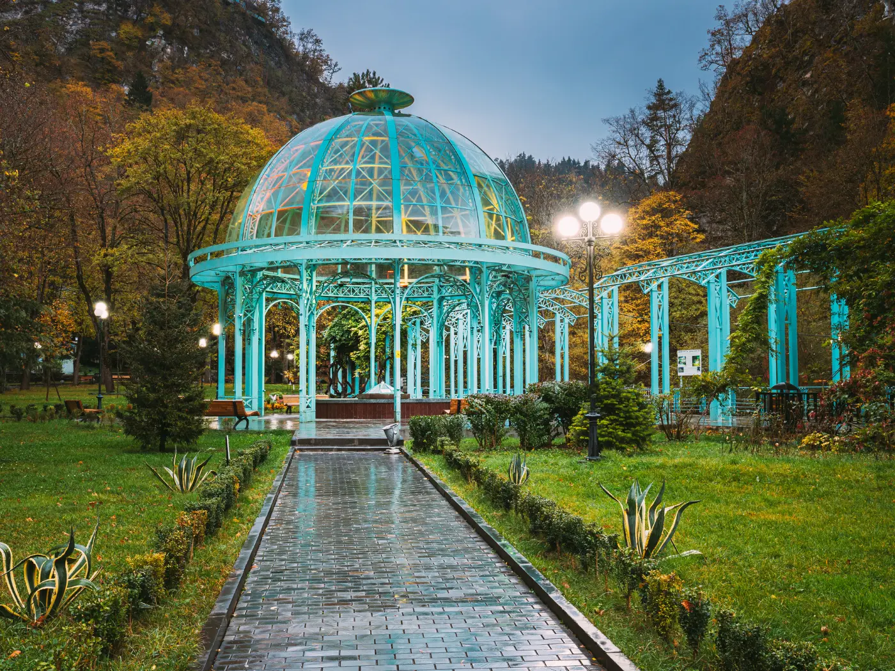

ჩემი საყვარელი ადგილები

ბორჯომი
ბორჯომის ტყე, სუფთა ჰაერი, ისტორიული პარკი თავს ძალიან მშვიდად და ბედნიერად მაგრძნობინებს.

ბათუმი
ბათუმის ზღვა, მრავალფეროვანი ადამიანები და ქალაქის ენერგია სიცოცხლით მავსებს.
რაჭა
რაჭა განსაკუთრებულად ლამაზი ბუნებით გამოირჩევა. მიუხედავად იმისა, რომ ჯერჯერობით ვერ შევძელი მისი დათვალიერება, ჩემი შემდეგი მოგზაურობა აუცილებლად რაჭაში იქნება.
📍